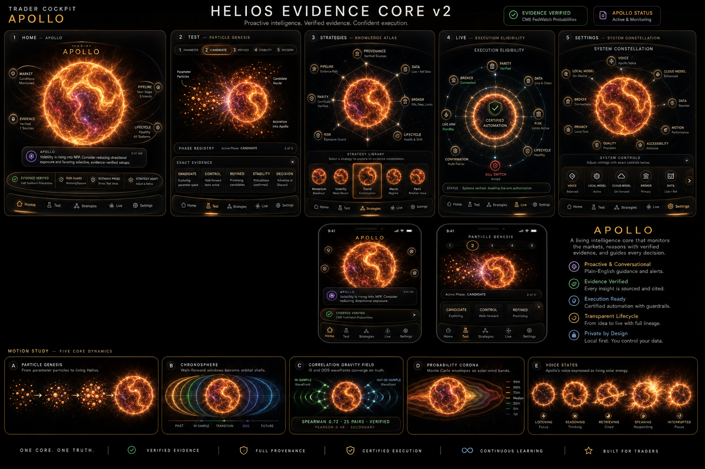

Proactive intelligence. Verified evidence. Confident execution.
Volatility is rising into NFP. Consider reducing directional exposure.
A living intelligence core that monitors the markets, reasons with verified evidence, and guides every decision.